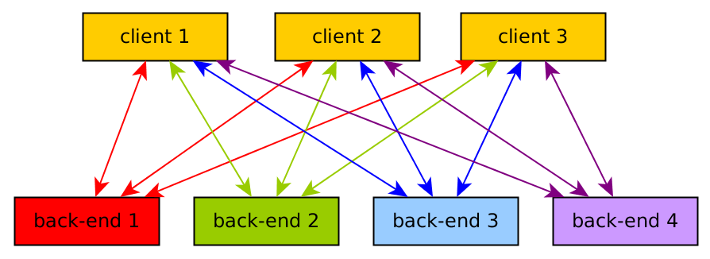

openEO proves its concept
The problem
Earth Observation data are becoming too large to be downloaded locally for analysis. Also, the way they are organised (as tiles, or granules: files containing the imagery for a small part of the Earth and a single observation date) makes it unnecessary complicated to analyse them. The solution to this is to store these data in the cloud, on compute back-ends, process them there, and browse the results or download resulting figures or numbers. But how do we do that?
The aim of openEO is to develop an open API to connect R, python and javascript clients to big Earth observation cloud back-ends in a simple and unified way.
With such an API, * each client can work with every back-end, and * it becomes possible to compare back-ends in terms of capacity, cost, and results (validation, reproducibility)
Why an API?
An API is an application programming interface. It defines a language that two computers (a client and a server) use to communicate.
The following figure shows how many interfaces are needed to be able to compare back-ends from different clients, without an openEO API:

With an openEO API (dark blue), the situation becomes much easier:

However, existing back-ends need to be taught to work with the new API, and clients that interact with back-ends need to be developed.
The task of the openEO project is to design, develop, and evaluate an API for cloud-based Earth Observation data processing.
First results
The openEO project started in Oct 2017. Now, within 6 months, we finished the first proof of concept, and demonstrate it. Three use cases were selected for this, three clients were developed pretty much from scratch (Python, R, and JavaScript), and seven back-ends were built or interfaced. Full information is available from the projects github organisation, and we point here to the
- swagger-2.0 complient API and its documentation
The three use cases
The three use cases comprise 1. Derive minimum NDVI measurements over pixel time series of Sentinel 2 imagery 2. Create a monthly aggregated Sentinel 1 product from a custom Python script 3. Compute time series of zonal (regional) statistics of Sentinel 2 imagery over user-uploaded polygons
The full description, including the consecutive interaction steps of the API, is found on the * proof-of-concept use cases site
Links to the client and back-end implementations
Clients:
Back-ends
- GRASS GIS driver
- WCPS driver
- OpenShift driver
- Python GeoPySpark/GeoTrellis driver
- Sentinel Hub driver
- Google Earth Engine back-end
- R back-end (developed for testing purposes)
With all this, you can install your own back-end of choice, install a client, and start analysing the data! (but do read “Next steps”, below). Alternatively, we show a couple of videos of screen casts made while testing the various clients and back-ends.
Proof-of-concept videos
R client and WCPS back-end, use case 1
Grass GIS back-end, use cases 1, 2 and 3
R client and R back-end, use-case 1
R client and R back-end, use case 3
openEO Web Editor (JS client) with three back-ends (use case 1)
Demonstrates use of back-ends Sentinel Hub, WCPS EURAC, and OpenShift EODC
openEO Web Editor (JS client) with R back-end (use case 3)
Python client with GeoPySpark back-end (use case 1)
openEO Web Editor (JS client) with Google Earth Engine back-end (use case 1)
Links to documents
The following four documents (formal project deliverables) describe the proof-of-concept more extensively: * openEO core API prototype including Proof of Concept * Two early prototype back-ends * Proof of Concept (Python)
In addition, a document has been written that describes standards and interfaces used by the various back-ends, and the extent to which they are or will be useful for further developing the openEO API: * Overview document about back offices metadata standards and interfaces
These deliverables have been submitted, but have not been approved, and hence may not be final.
Next steps
During the proof-of-concept, intentionally a number of difficult issues were not addressed, including * billing (costs) of processes and account management and * authentification while others were defined rather vaguely, including * the description of data (end point /data) * the description of processes (end point /processes).
The next steps will include: * discussing of the use-cases in the proof-of-concept * deciding whether to adopt existing standards and interfaces, e.g. for data descriptions * getting users involved outside the openEO consortium to define further requirements and priorities * designing a new iteration of the openEO API.
Getting involved
As any API, the openAPI will only become good and useful if it is being used, and it needs testing by a wide audience. We are now at the stage of designing it, but at the point where large chunks are useful already. If you want to contribute to any of this, please do not hesitate and contact us e.g. by * expressing interest * writing GitHub issues wherever you think it is appropriate * sending an email